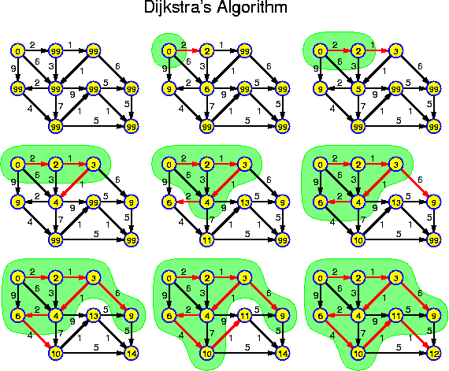
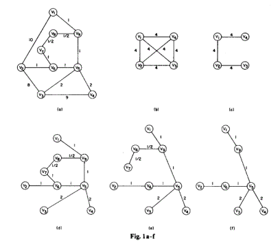
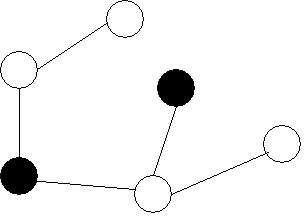
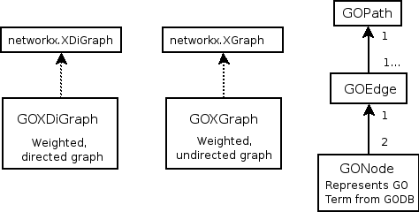
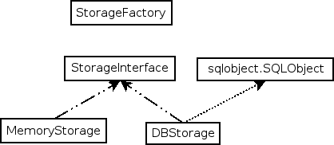

Review of the GOSteiner Project
created by Xinghua Lu, Lam C Tsoi, Brian Muller
Overview
- Introduction
- Methodology
- Implementation
- Conclusion
Motivation and Foundation
Biologists would like to know to what extent certain proteins are functionally similiar. We used a handful of tools to determine a basic similarity distance.Tools Used:
Methodology
- Create weighted, directed graph from GO term relationships.
- Each term (node) has some number of proteins associated with it
- Each edge has a weight based on proteins associated with children terms
- The graph is trimmed; those nodes with no associated proteins (both directly and through children) are removed.
Dijkstra's algorithm
- Convert to weighted undirected graph
- Extract all pair-wise shortest paths between GO terms that have protein associations
- Dijkstra algorithm: similar to Prim's algorithm, but the length of the path (from source to candidate vertex) is more important

Bidirectional Dijkstra's algorithm
- Twice as fast as Dijkstra
- Expands the nodes from both the source and sink
- 1256 GOids with associated proteins (out of 2119 terms), so about 788,000 shortest paths - (n * (n - 1)) / 2. The shortest paths are found and stored for the completed graph.
GOSteinerTree
- Given protein list --> get GOids
- Perform Kou algorithm
- Output: minimum spanning tree of the associated GOids
GOSteinerTree
Prim's algorithm
- Construct minimum spanning tree from complete/connected graph
- Priority queue is used to store the edges visited

Priority queue: heapq
- the weight, as well as the edge is added to the queue
- heapq module from python
- a[k] <= a[2*k+1] and a[k] <= a[2*k+2]
- a[0] is always the smallest
- heappush and heappop
Trimming algorithm
Trimming the leaves that are not associated with the protein list- Initialize with a GOid in the list
- keep track of the nodes visited
- trim(node)
- if node has child:
- for node.child:
- trim(node)
- if node STILL does not have child
- if node not in list
- delete node
Trimming algorithm
GOSteinerTree: output
- weighted, non-directional MST
- total length of tree, measured in Lus
- compare distances with random GOids
- test set: protein list in KEGG pathway
Implementation
- Extended networkx weighted graphs (directed and undirected)
- Created our own edge and node classes 
Implementation (cont.)

Implementation - Usage
- Initialize graphs / storage given a domain, species, associations file, GO Term xml file
- Give a group of proteins
- Returns graph (Steiner tree), with total weight, etc.
Results and Future Plans
The initial storage function takes about 2 hours to complete. The bottleneck is determining and storing the ~700,000 shortest paths. We are still testing the second stage.- Add support for gene file from KEGG
- Web interface
- Visualization tools